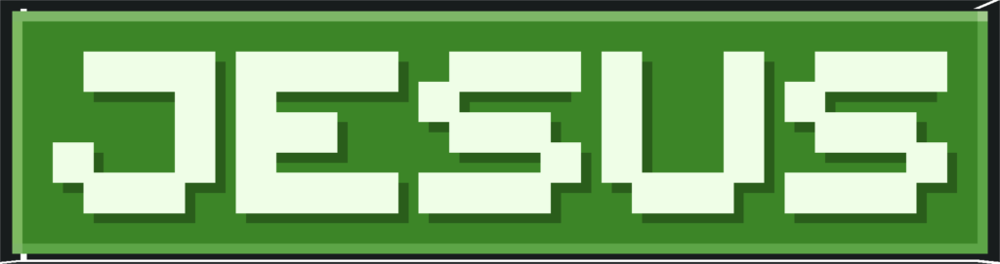

|
Хто ми такі???
Привіт, друзі! Ми — українська команда, яка створює захопливі карти для Minecraft. Наш невеликий, але талановитий колектив складається з трьох ключових учасників.
— це директор проєкту та наш головний творець. Він відповідає за все: написання коду для дата-пака, повну розробку та будівництво карти, створення унікальних текстур, написання музики та написання сюжету для карти.
 — Людина яка займається 3D моделями. Завдяки йому більшість 3D-моделей на наших картах оживають. Jesus перетворює ідеї на мінімалістичні й у стилі майнкрафт об'єкти, додаючи об'єму та унікальності нашій карті.
— Художник. Він відповідає за художнє оформлення, створюючи основний арт проєкту та працюючи над окремими текстурами, що доповнюють загальну естетику карти.
|